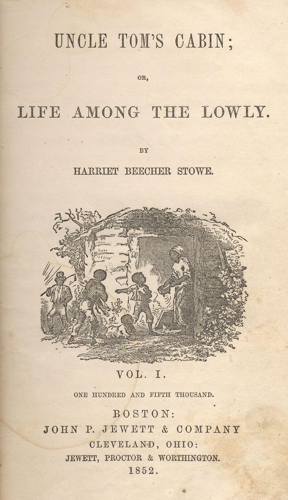

Uncle Tom's Cabin
Harriet Beecher Stowe's antislavery novel Uncle Tom's Cabin changed how Americans viewed slavery forever through its realistic depiction of slaves, advocating the emancipation of slaves. The novel follows Uncle Tom, a devout Christian slave, and Eliza, a slave who runs away in an attempt to save her family. First, read a summary of the plot, then read an analysis on how Stowe communicated with her audience to spread the novel's message. Later, find out the significance of Uncle Tom's Cabin in American history.
Read the full text of Uncle Tom's Cabin by clicking the link directly below, or start by reading the summary.